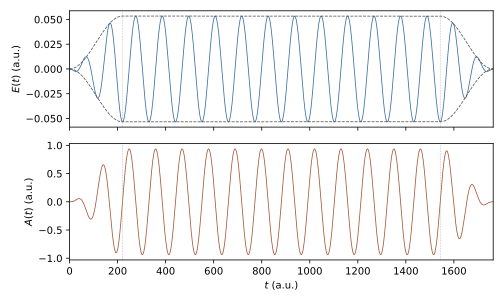

Laser Field
The driving field is a classical, spatially uniform electric field
\(\mathbf E(t)\) given as one muParser expression of the time t per
axis. It couples to the carrier in the length gauge, the only gauge
implemented:
where \(H_0\) is the field-free Hamiltonian
(Eq. (23)), \(q\) the Charge and
\(P\) the set of polarised axes. In the discrete equations
\(x_a\) is the dipole matrix \((D_a)_{ij} = \int B_i\,x_a\,B_j\,d\mathbf r\)
(Physics Conventions). For an electron (\(q = -1\),
\(s = 1\)) the expression enters as written and the force on the carrier
is \(-\mathbf E(t)\).
Polarization
Key |
Type |
Default |
Description |
|---|---|---|---|
Polarization / LaserPolarization / DriverPolarization |
string |
empty |
Axes coupled to the field: |
Each listed axis must exist in the problem (Polarization = xy needs
Dimension >= 2). Propagation (EnablePropagation = 1) needs at least one
polarised axis; a field-free propagation is written as, for example,
Polarization = x with LaserX = 0.
Only the polarised axes are coupled to the field. The response (dipole,
current, acceleration) is recorded on every spatial axis by default;
ObserveAllAxes = 0 restricts it to the polarised axes (Observables).
Field Expressions
Key |
Type |
Default |
Description |
|---|---|---|---|
LaserX / LaserY / LaserZ (aliases DriverX / DriverY / DriverZ) |
muParser in |
empty |
Field component \(E_a(t)\) in atomic units on a polarised axis. |
Laser (alias Driver) |
muParser in |
empty |
Field used for every polarised axis that has no |
The field is the expression exactly as given; no envelope, amplitude or phase
is applied on top of it, so the pulse shape is written inside the expression.
With EnablePropagation = 1 every polarised axis must have a field (its own
or Laser); the input is rejected otherwise. On axes that are not
polarised the field is zero, whatever expression is set. The constants
pi, the Variables and the input parameters listed in
Potential & Mass are available in the expressions.
Simple \(\sin^2\) pulse of four cycles at 800 nm:
Polarization = x
Ampx = 0.0534
Omegax = 0.057
LaserX = Ampx*sin(Omegax*t/8)^2*cos(Omegax*t + CEPx)
Field from a vector potential
A field defined directly by an envelope times a carrier has in general a nonzero time integral, so the carrier keeps a drift momentum after the pulse. Writing the field as the derivative of a vector potential that vanishes at both ends of the pulse avoids this:
so that \(\int E\,dt = A(0) - A(T_p) = 0\). The example
examples/hhg/hhg_1d.inp uses a flat-top envelope with \(\sin^2\) ramps
of duration \(T_r\),
with \(f'(t)\) written out explicitly in the field expression:
Variables = E0=0.0534, w=0.057
Variables = Tr=220.4625, Tf=1543.2375, Tp=1763.7
Polarization = x
LaserX = -(E0/w)*( (t<Tr ? (pi/(2*Tr))*sin(pi*t/Tr) : t<Tf ? 0 : t<Tp ? -(pi/(2*Tr))*sin(pi*(t-Tf)/Tr) : 0)*sin(w*t) + w*(t<Tr ? sin(pi*t/(2*Tr))^2 : t<Tf ? 1 : t<Tp ? cos(pi*(t-Tf)/(2*Tr))^2 : 0)*cos(w*t) )
Fig. 5 shows the resulting \(E(t)\) and \(A(t)\).


Fig. 5 Field \(E(t)\) (top, dashed: \(\pm E_0 f(t)\)) and vector potential
\(A(t)\) (bottom) of Eq. (26) and
Eq. (27) for the parameters of
examples/hhg/hhg_1d.inp (800 nm, \(E_0 = 0.0534\) a.u., 2-cycle
ramps, 12 flat cycles). Dotted lines mark \(T_r\) and \(T_f\).
Named Field Parameters
The keys below define named constants for the field expressions. Apart from
the use of Omegax/y/z described in the next section, they have no effect
unless an expression refers to them.
Key |
Type |
Default |
Meaning (by convention) |
|---|---|---|---|
Ampx/y/z, Omegax/y/z, CEPx/y/z |
real |
|
Per-axis amplitude, angular frequency and carrier-envelope phase. |
LaserAmplitude / DriverAmplitude |
list |
– |
Comma-separated values for |
LaserFrequency / DriverFrequency |
list |
– |
Comma-separated values for |
CarrierEnvelopePhase / DriverCEP |
list |
– |
Comma-separated values for |
In the list forms a single value is used for all three axes, and missing
entries take the first value. Further constants (pulse duration, centre,
ramp times) are defined with Variables, as in the example above.
Field Scales
At start-up the field is sampled on the polarised axes over
\([0, \texttt{FinalTime}]\) to obtain its peak value \(E_0\). The
angular frequency \(\omega\) is the largest Omegax/y/z of the
polarised axes; when these are zero it is estimated from the zero crossings
of the dominant component. From these, with
\(I_p = -\texttt{TargetEigenvalue}\) (or 0.5 when the target is not
negative), TDSE-Z derives the three-step-model scales [Corkum1993]
They are used only for diagnostics and defaults: elements wider than
\(h\) produce a resolution warning, KnotSequence = hydrogenic with
the default HydrogenicHMax = 0 caps the element width at \(h\)
(Knot Sequences), and with EnableCAP = 1 the absorber-free core
is compared with the quiver radius \(\alpha\) (Boundary Conditions).
Without propagation, without a field, or when \(\omega\) cannot be
determined, these scales are not computed and the checks are skipped.
Unsupported Keys
The keys Envelope, EnvelopeType, Amplitude, Omega, Phase,
PulseDuration and PulseCenter are not accepted: the envelope belongs in
the field expression, and named values are set with the per-axis constants or
Variables. With StrictInput = 1 (default) such a key stops the run
with a message naming the replacement; EnvelopeType = custom (or an empty
value) only prints a warning, since it describes the expression form. With
StrictInput = 0 every unsupported key prints a warning.